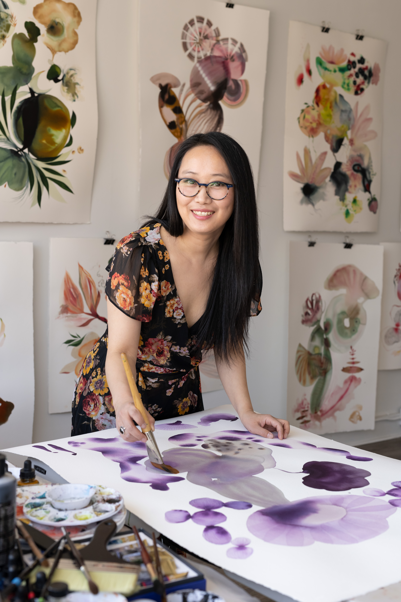

Interview with Suyao Tian: A Journey into Color

Suyao Tian is a professional artist based in the Twin Cities, MN, USA, currently serving as adjunct faculty at the Minneapolis College of Art and Design. Originally from China, she began her academic journey in Music Education at Qinghai Normal University and Xiamen University, ultimately earning a BFA in music education. Following her studies, she pursued a career as an Assistant Professor in Music Education at Guangdong Polytechnic Normal University Tianhe College, China.
In 2011, she moved to the United States to follow her passion for art and design. She initiated her artistic journey by obtaining a Bachelor of Arts in Fine Art from the University of Central Arkansas. Continuing her educational pursuit, she earned her Master of Fine Arts (MFA) in Design from the Minneapolis College of Art and Design in 2017, distinguished with honors and rewards.
In the realm of professional artistic career development, her paintings have taken center stage and have been featured in numerous group and solo exhibitions both nationally and internationally. In the arena of commercial art, her distinctive painting style has attracted the attention of prestigious companies such as Target, Room & Board, BOND Dubai, VISTO art Paris, Merlette NYC, and more.
In 2022, she furthered her commitment to the art community by opening the Viewpoint gallery, focused on showcasing the works of local solo artists and fostering community engagement. Currently, she holds positions on the Executive Board of Art Buddies and serves as a board member of the Northeast Minneapolis Arts Association (NEMAA), reflecting her active involvement and leadership in supporting and advancing the arts. Beyond her roles as a curator and artist, she actively participates in various organizations within the art and creative communities.
Suyao Tian on Instagram: @suyaotian
Suyao’s website: www.suyaotian.com
View Point Gallery website: www.vp.gallery
View Point Gallery on Instagram: @viewpoint_gallerymn
Modern Cover website: www.moderncover.net

Imagination is integral to my work; I utilize water-based media to create abstract paintings, employing abstract forms and shapes. I often enlarge or distort these elements to construct dreamlike landscapes and peculiar, otherworldly beings within an imaginative world.

Growing up as a single child during China’s one-child-only policy in the 80s, I navigated the impact of cultural norms, expectations, and a highly competitive exam-oriented education system prioritizing memorization over critical thinking and imaginative problem-solving. This has affected generations in both school and family education. Personally, the absence of siblings, the prohibition of having pets, and limited social interactions due to rules resulted in a lack of communication and confidence. As a child, my means of expressing emotions were found in nature, where I would catch various small bugs, put them in jars, speak to them, and play with them—becoming my only childhood listeners.

As a professional artist now, my imagination still seeks inspiration from nature, extracting fragments of memory, imagination, and subconscious thinking for my creations. These have become symbolic in the language of my paintings.
Free imagination remains central to my work, with two aspects of meaning to me: one is the idea of breaking away and freedom of creation from within myself, and the other is the freedom of imagination for everyone.

To understand the perspective of breaking away, growing up I experienced government control over various aspects of society, including media and arts, limiting freedom of expression and creative exploration, being taught the theory of “人定胜天.” My paintings challenge this idea and serve as a demonstration to underscore the importance and critical role of imagination in humanity and culture.
In my paintings, I intentionally omit clear or emphasized faces or figures. I create symbolic figures connected to other creatures, shapes, and unknown forms, forming an imaginative world where everything is interconnected and dependent on each other, with the entire world considered crucial. This deliberately omits anthropocentric interpretations in order to prompt people to reconsider the true relationship between man, nature, and the universe.

The other aspect of Free Imagination comes from people who appreciate my works. Firstly, I hope my works are for everyone, irrespective of age, skin color, or political background, to participate in the imaginative space and have the freedom to unleash their imagination. Secondly, I don’t believe the meaning of art should always be determined by the artists. The audience has the rights and ability, based on their experience of the world, to interpret the meaning of the art on their own. My paintings aim to awaken and inspire imagination in all of humanity.

The significance and meaning of my works are not what I created for each painting. Instead, the process of creation and the audience’s interpretation holds more importance in the realm of free imagination. I emphasize the process and people’s imagination in completing the meaning of my paintings. The significance of my works lies in the “no specific meaning,” to provide humanity with the basic need of a safe and beautiful space for free imagination, representing the essence of art and imagination itself.
Suyao Tian on Instagram: @suyaotian
Suyao’s website: www.suyaotian.com
View Point Gallery website: www.vp.gallery
View Point Gallery on Instagram: @viewpoint_gallerymn
Modern Cover website: www.moderncover.net